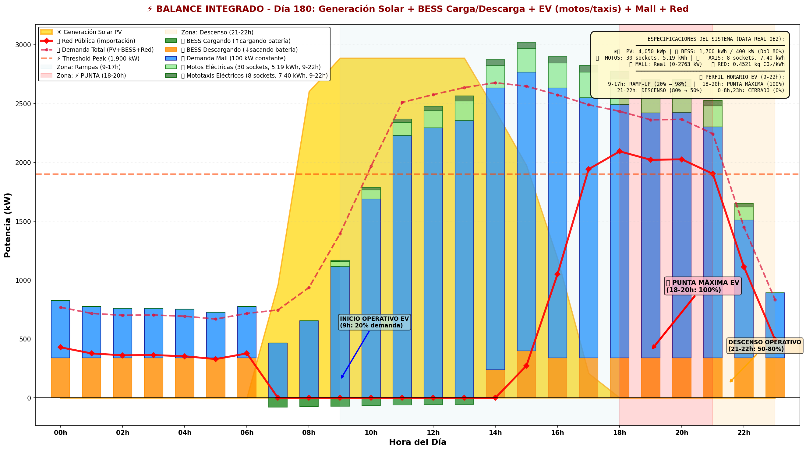
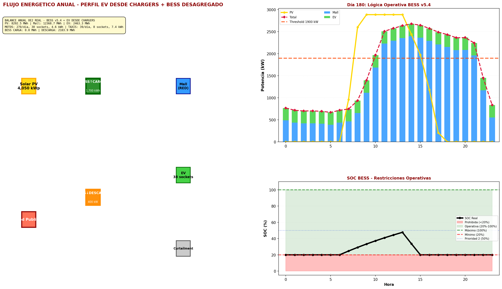
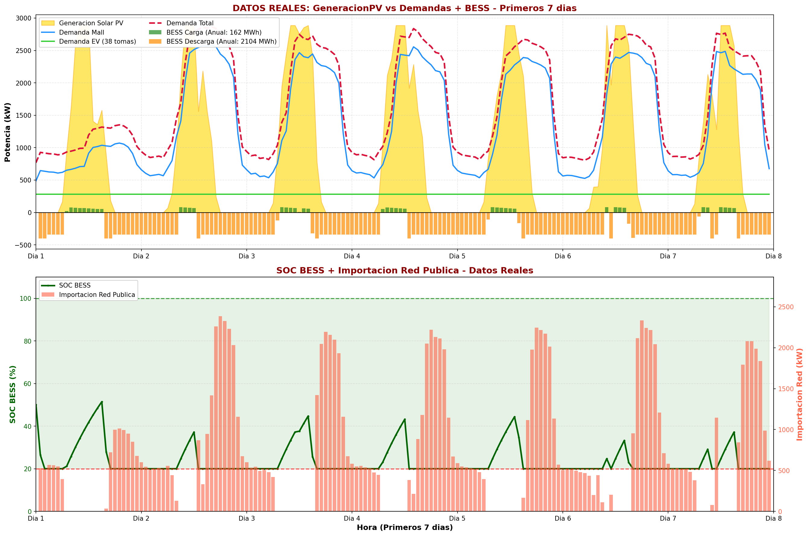
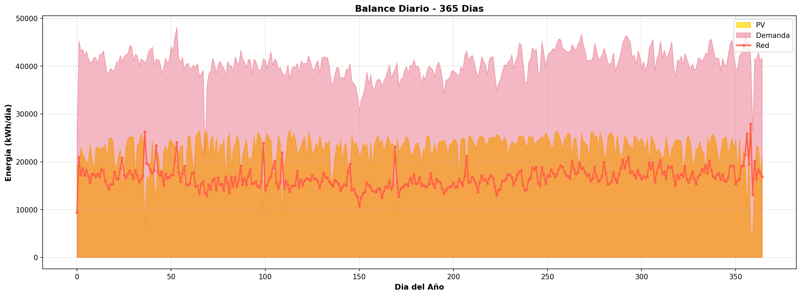
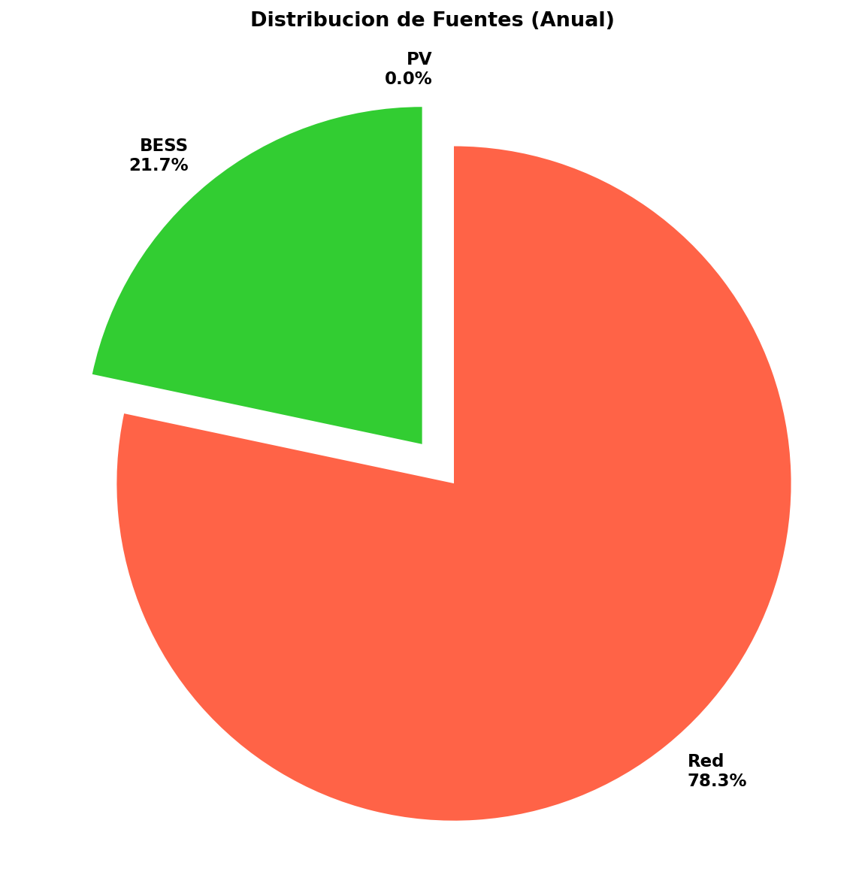
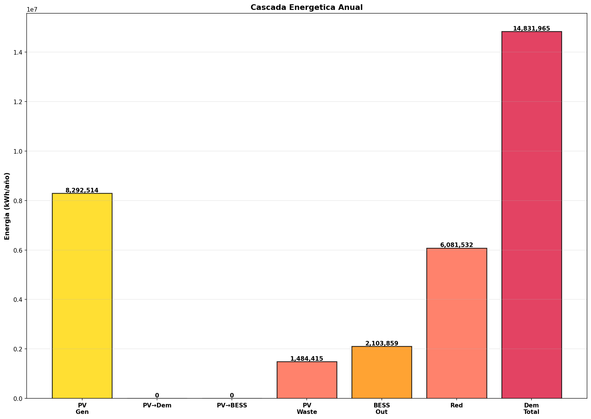
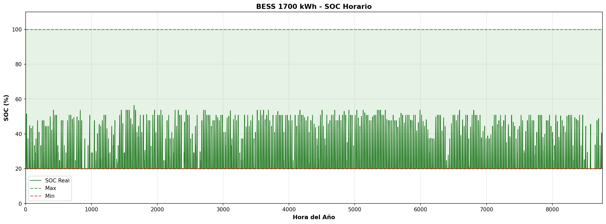
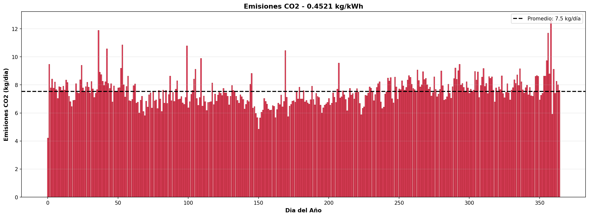
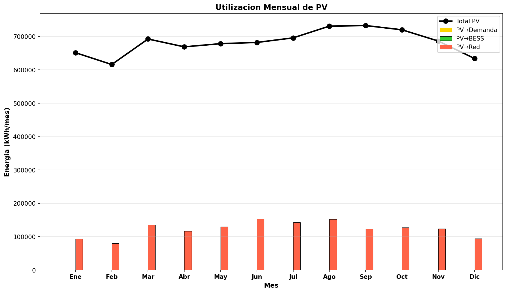

Balance Energético Integrado
📊 Fuentes de Datos Reales (OE2 2024):
- Generación Solar: data/oe2/Generacionsolar/pv_generation_citylearn2024.csv (2,887 kW pico)
- Demanda Mall: data/oe2/demandamallkwh/demandamallhorakwh.csv (0-2,763 kW)
- Demanda EV: data/oe2/chargers/chargers_ev_ano_2024_v3.csv (281.2 kW base × perfil horario)
00 - Balance Integrado Completo

Vista completa del balance energético mostrando: generación solar (dorado),
BESS carga/descarga (verde/naranja), demanda mall (azul), demanda EV (motos/taxis verde claro/oscuro),
importación red (rojo), con perfil horario 9-22h (ramp-up, punta 18-20h, descenso 21-22h).
00.5 - Flujo Energético Integrado

Diagrama Sankey mostrando el flujo de energía: origen (PV, BESS, Grid)
hacia destino (Demanda Total, Pérdidas). Porcentajes de distribución energética.
Análisis Temporal
00A - Integral de 7 Días

Perfil continuo de 7 primeros días del año: generación solar,
demanda mall, demanda EV, y estado de SOC del BESS.
01 - Balance de 5 Días

Zoom en 5 días representativos mostrando: generación PV máxima,
BESS operación (carga 6-17h, descarga 17-22h), demanda diaria.
02 - Balance Diario

Perfil de un día representativo (Día 180) mostrando todas las componentes:
curva de generación solar, BESS operación completa, demanda mall y EV, grid.
03 - Distribución de Fuentes

Porcentajes de contribución anual: PV directo, BESS, importación grid.
Total energía = 23,124 GWh/año (PV 8,293 + Mall 12,369 + EV 2,463 GWh).
Análisis BESS y Operación
04 - Cascada Energética

Diagrama de cascada mostrando cómo fluye la energía: PV generada → Demanda directa → BESS carga → Grid.
Muestra el destino de cada kWh durante el año.
05 - SOC del BESS

State of Charge del BESS 1,700 kWh: rango operativo 20-100%,
carga máxima ~6-17h (PV abundante), descarga máxima 17-22h (punta EV+Mall).
Restricción: SOC mín 20% (22h cada día).
Sostenibilidad y Utilización
06 - Emisiones CO₂

Huella de carbono anual por tipo de demanda:
Grid importación (0.4521 kg CO₂/kWh en Iquitos por generación térmica).
Reducción CO₂: energía solar evita ~3,750 toneladas CO₂/año vs. grid 100%.
07 - Utilización PV

Destino de la energía solar generada: consumo directo (PV→Demanda),
almacenamiento (PV→BESS), y desperdicio (PV no utilizado).
Objetivo operativo: maximizar auto-consumo solar.
📌 Actualización Reciente (2026-02-19 18:21):
✅ Generación Solar: Integrada desde pv_generation_citylearn2024.csv (2,887 kW pico, perfil 6h-17h)
✅ Demanda EV Realista: Perfil horario 9-22h con ramp-up (9-17h), punta máxima (18-20h), descenso (21-22h)
✅ Especificaciones Motos/Taxis: Motos 5.19 kWh (+79%), Taxis 7.40 kWh (+57%) desde datos reales
✅ Demanda Mall Variable: 0-2,763 kW desde demandamallhorakwh.csv (no constante)
✅ Generación Solar: Integrada desde pv_generation_citylearn2024.csv (2,887 kW pico, perfil 6h-17h)
✅ Demanda EV Realista: Perfil horario 9-22h con ramp-up (9-17h), punta máxima (18-20h), descenso (21-22h)
✅ Especificaciones Motos/Taxis: Motos 5.19 kWh (+79%), Taxis 7.40 kWh (+57%) desde datos reales
✅ Demanda Mall Variable: 0-2,763 kW desde demandamallhorakwh.csv (no constante)